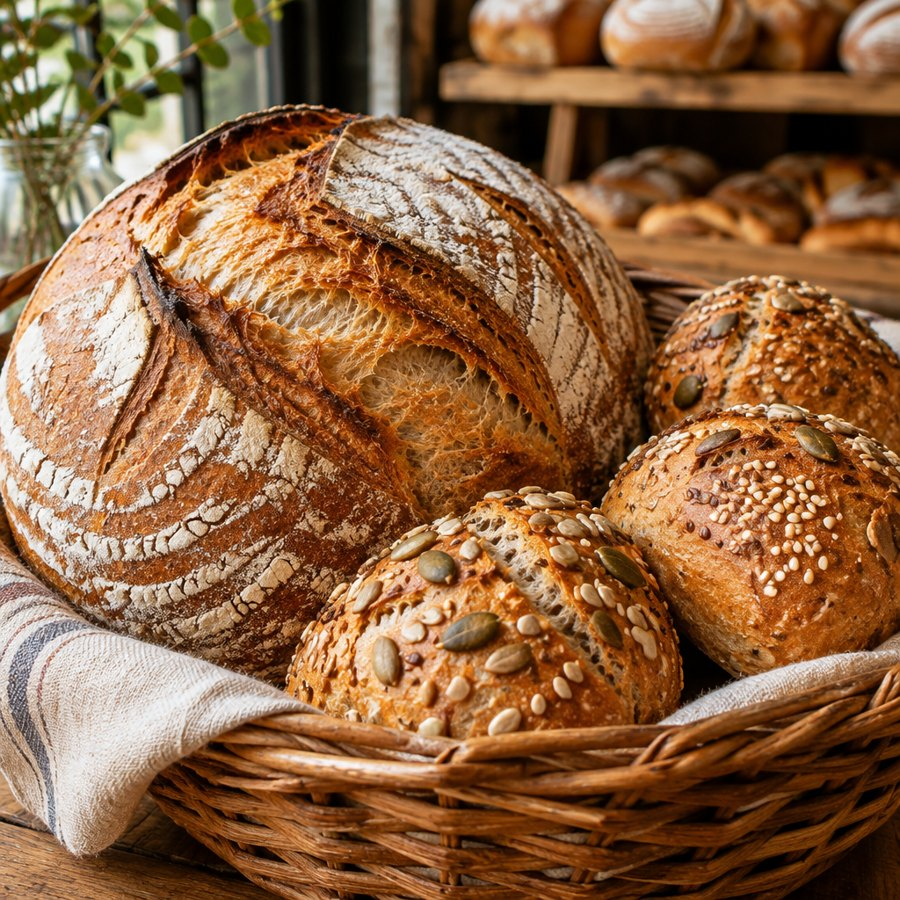
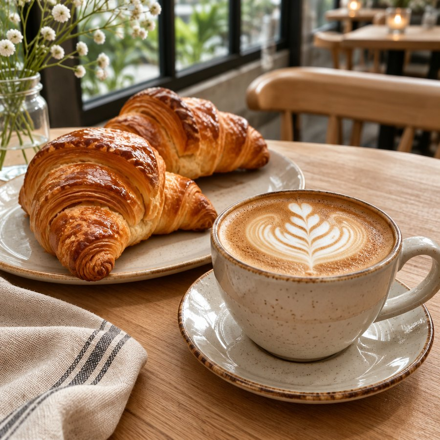
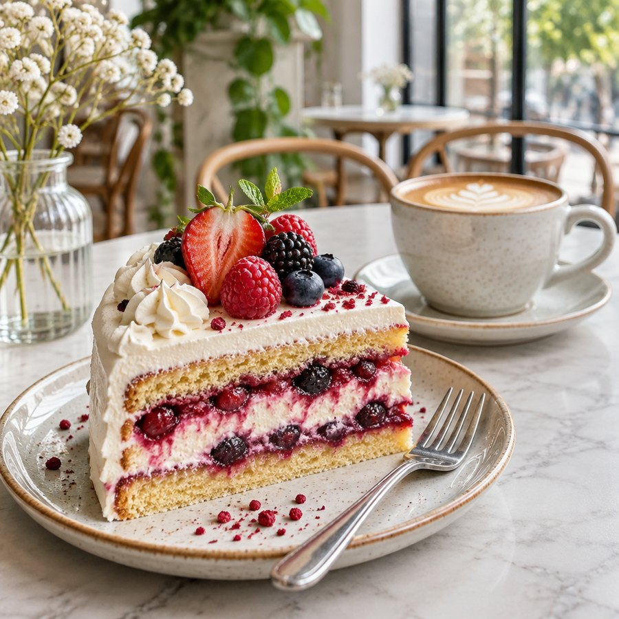

Handwerksbäckerei und Café seit 1987. Brot, Gebäck und Kuchen aus eigener Backstube, dazu der beste Platz für Ihre Kaffeepause.

Natursauerteig, 24 Stunden Teigruhe

Buttercroissants, täglich frisch

Nach Familienrezept, auch auf Bestellung
Frühstück ab 6.30 Uhr, hausgemachter Kuchen am Nachmittag. Reservieren Sie Ihren Tisch in zehn Sekunden online.
Jetzt reservieren